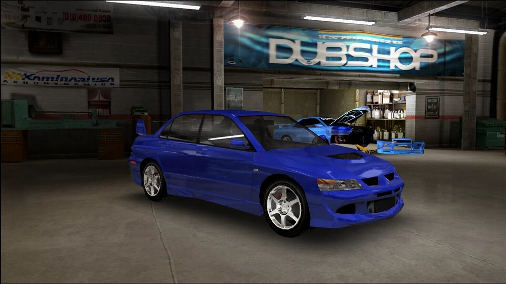
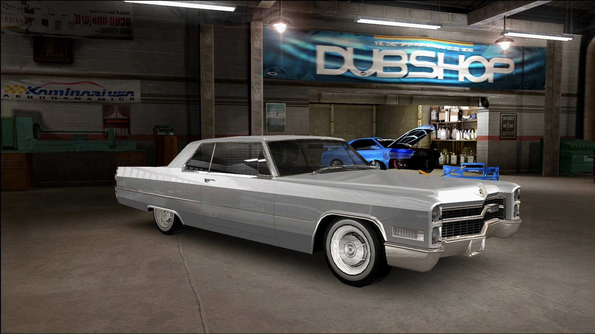
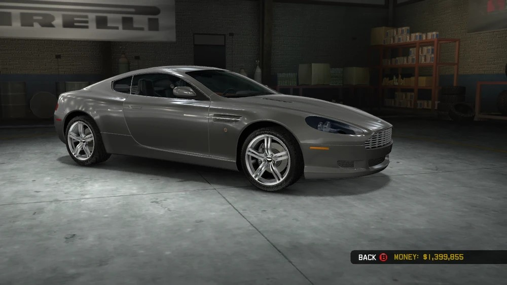
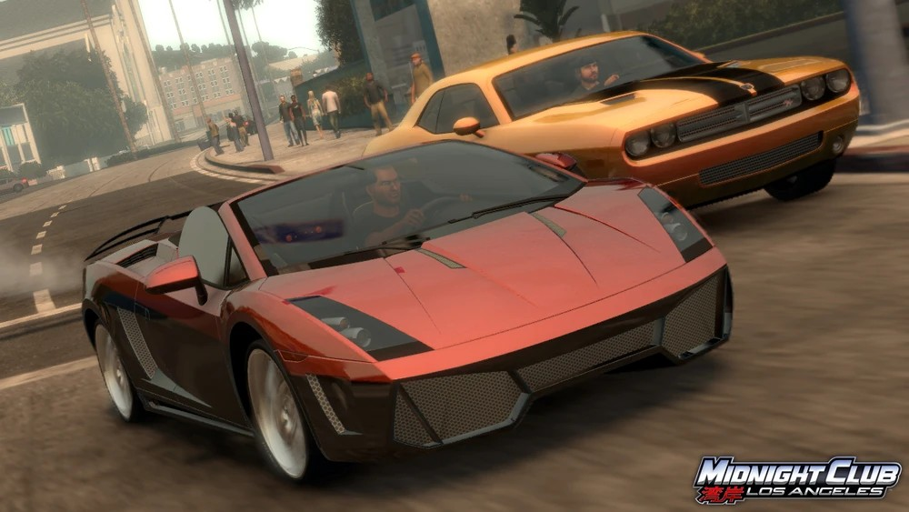
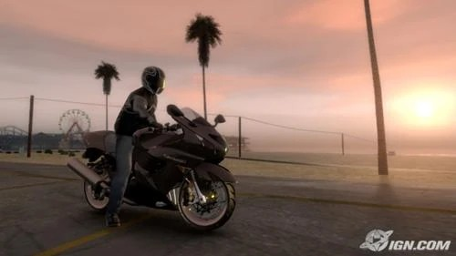

Vehicle Classes
The base game ships with 46 licensed vehicles split across five classes. Every car and bike can be repainted, decaled, and upgraded with aftermarket parts at Hollywood Auto, the game's garage hub.

Tuners- Compact, import-style cars such as the Volkswagen Scirocco and Mazda RX-8. Tuners are the starting class and focus on handling over raw power.

Muscle- American muscle cars like the Dodge Challenger R/T and Pontiac GTO. Built for straight-line speed and wager races.

Luxury- High-end sedans and roadsters such as the Cadillac XLR-V and Mercedes-Benz S600, blending comfort with performance.

Exotics- The fastest class in the game, including the Lamborghini Murcielago Roadster and the Saleen S7 Twin Turbo.

Sport Bikes- Motorcycles such as the Ducati 999R and Kawasaki Ninja ZX-14, prized for quick acceleration and tight handling.
Complete Edition Additions
The Complete Edition adds 15 more vehicles on top of the base game, including two brand-new classes:
- SUVs, such as the Range Rover Supercharged
- Lowriders, such as the 1964 Chevrolet Impala
- A set of pursuit-ready police cars